Sales orders, purchase orders, customer information, equipment data residing in SAP applications like SAP S/4 HANA are a great source of information often leveraged for building data products or at least contributing to them. It is a natural fit leveraging SAP Business Technology Platform to build data products sourced from SAP applications like SAP S/4HANA or SAP Business Warehouse systems. While SAP provides a spree of technology to be leveraged as foundation for a Data Mesh implementation with the SAP Business Technology Platform, SAP Datasphere enables a lean and cloud-based foundation for implementing a data mesh. Therefore, the blog focuses on how to deliver a data mesh based on SAP Datasphere. The goal of SAP Datasphere is to enable a business data fabric which can be leveraged in data mesh projects.
(To note: SAP Datasphere is a Service run on the SAP Business Technology Platform, which is fully cloud-based and offers the identity, security, development, runtime, and many more services which can leveraged as part of the Self-serve data platform: see the SAP Discovery Center for a detailed list of available services)
SAP Datasphere comes with an exceptional integration into SAP applications, allowing to re-use the rich business semantic and data entity models for building data products. SAP Datasphere furthermore provides integration to many non-SAP cloud and on-premises data stores.
SAP Datasphere integrates out of the box with SAP S/4HANA tables and supports replication as well as federation. The integration is based on the VDM (virtual data model) which forms the basis for data access in SAP S/4HANA in, for example, analytical applications and APIs. The VDM of SAP S/4HANA Cloud and SAP S/4HANA is represented by CDS views. They expose business data - stored in database tables - in a format that is based on business semantics and therefore easy to consume.
SAP Datasphere also supports out of the box integration to non-SAP data sources.
SAP Datasphere provide access to data from a wide range of sources, cloud as well as on-premise sources, SAP as well as Non-SAP sources, and partner tools. SAP Datasphere allow space members to use objects from the connected source to acquire, prepare and access data from those sources in SAP Datasphere. To connect to different sources, SAP Datasphere provides different connection types.
In the Analytical Model within SAP Datasphere data products can be build based on replicated or virtualized data.
In the Analytical Model within SAP Datasphere data products can be build based on replicated orvirtualized data. Analytic models are the foundation for making data ready for consumption in SAP Analytics Cloud. They allow you to create and define multi-dimensional models to provide data for analytical purposes to answer different business questions. Pre-defined measures, hierarchies, filters, parameters, and associations provide flexible and simple navigation through the underlying data.
Spaces within SAP Datasphere allow domain teams to work on their ‘own’ data and dedicated resources to build data products.
Spaces are secured virtual work environments which provides:
- isolation for metadata objects and Space resources
- defines storage quota, control resource usage and workload class settings per space
- maintains Space-specific source system connections and a common time dimension
- manages user access for space members
- enables sharing of data and currency conversion settings with other spaces
SAP Datasphere Replication Flows and Data Flows for realtime-read, replication,
transformation,
as well as creating of data snapshots in data stores fully managed by SAP
Datasphere.
SAP Replication Flows help to:
- Model data replication from a selected source to a selected target
- Focus on 1:1 replication with simple projections and filters
- Integrated user interfaces in Data Builder
- Integrated monitoring features in Data Integration Monitor
- Support initial load as well as delta load capabilities
SAP HANA Cloud and SAP HANA Cloud Data Lake can be fully leveraged for data stored within SAP Datasphere.
SAP HANA Cloud is an in-memory database which provides a single place to access, store, and process all enterprise data in real time. SAP HANA Native Storage Extension (NSE) is a general-purpose, built-in warm data store in SAP HANA Cloud that lets you manage less-frequently accessed data without fully loading it into memory. It integrates disk-based or flash-drive based database technology with the SAP HANA in-memory database for an improved price-performance ratio.
The Data Lake Relational Engine is an SAP HANA Cloud component which provides high-performance analysis for petabyte volumes of relational data. Data Lake Files provides managed access to structured, semi-structured, and unstructured data stored as files.
SAP HANA Cloud, Data Lake Relational Engine and Data Lakes Files are fully integrated, sharing common security and tooling with all HANA Cloud components.
The SAP Datasphere Data Catalog for Data Discovery & Consumption helps in facilitating
self-service, data democratization and data governance programs.
Browse Catalog assets, terms and KPIs for:
- Advanced Search and Filtering capabilities
- Asset Details screen for source metadata and enrichment
- Lineage & Impact Analysis across SAP Analytics Cloud and SAP Datasphere artifacts
The SAP Datasphere Marketplace is the go-to destination for consumers and producers to interact with data products. It provides convenient and adaptable solutions for the purchase and consumption of these products. The Data Marketplace is fully integrated into the SAP Datasphere, presenting structured documents known as data products to be used in one or more SAP Datasphere Spaces. Data providers can oversee the complete lifespan of their data products, including how widely they are used - especially when it comes to removal. By controlling context, it's possible to differentiate between public, private and internal data products, meaning providers can set visibility rules from the start to decide who data products can be shared with, and why - for instance, to introduce an internal data marketplace or to allow for data exchange between different organizations.
Find Data Products:
Explore data solutions from both commercial vendors
and providers of open data, or encourage members of your network to become data providers
themselves, thereby fostering data sharing within your ecosystem Data Products are fully
integrated into the Marketplace of SAP Datasphere. Data products can be used in one or several
spaces within the SAP Datasphere tenant. It is possible to search and browse for data products
and data providers and the results will be displayed in a list and are sorted by best match by
default.
Contact Data Product Owner
Get in touch with data product owners to
request
individualization of currently listed data products or setup bi-directional data exchange, e.g.,
get weather data for all facilities maintained in your view.
Contact Data Product Owner
Get in touch with data product owner to request individualization of currently listed data
products or setup bidirectional data exchange, e.g., get weather-data for all facilities
maintained in your view. To interact, the Data Consumer can request pricing and delivery for
products that are listed with pricing “On Request” or with Delivery Type “External Delivery”.
This generates a mail in the data consumers mail client with a template and the data product
information prefilled to facilitate the interaction between data provider & data consumer. In
addition, the user can contact the data provider with the “Mail” button in the top right corner
of the data product page.
Load Data Product
Bring your existing licenses with your data product
owner – SAP takes no
brokerage. Select your target space and the Marketplace delivers the data by creating the
artifacts and populates the data – initially and every time the data product owner releases a
new version.
Track Data Products
Manage all your subscribed data products centrally with delivery and usage tracking and update
management.
Check whether data products are up-to-date or if updates are running or if they failed.
It helps to track the progress of the installation and to determine information regarding older
installations. Likewise, this menu item provides maintenance and de-installation of all loaded
resources from the SAP Data Marketplace.
Use Data Products
Use data products with your other data models to create additional data products or leverage
them for insight to action. Consumers of data products can correlate data across domains and
stitch them together in wonderful, insightful ways; join, filter, aggregate, etc. This is
achieved across domains by following standards and harmonization rules with data governance in
place.
There is a wide range of software solutions offered in the ecosystem of SAP Datasphere.
Enrich all data projects with a powerful open data ecosystem.
Bring SAP and
non-SAP data together leveraging tailored integration with solutions from open data ecosystem
partners and reduce integration complexity. Get an integrated view of information regardless of
where it is stored or how it was designed.
With the SAP Analytics Cloud solution, you can bring together analytics and planning with unique integration to SAP applications and smooth access to heterogeneous data sources.
With SAP Analytics Cloud customers can
- Increase agility with analytics and planning in one solution
- Utilize the full context of real-time SAP data
- Deliver high-performance analytics at scale
- Automate insights with machine learning
- Quickly compose specialized analytic apps
- Deliver analytics closer to the point of decision
- Increase agility with analytics and planning in one solution
- Utilize the full context of real-time SAP data
- Deliver high-performance analytics at scale
- Automate insights with machine learning
- Quickly compose specialized analytic apps
- Deliver analytics closer to the point of decision
- Connect financial and operational plans seamlessly integrated with SAP application
- Connect financial and operational plans
- Seamlessly integrated with SAP application
SAP AI Core is a service in the SAP Business Technology Platform which is designed to handle the execution and operation of your AI assets in a standardized, scalable, and Hyperscaler-agnostic way. It provides seamless integration with your SAP solutions. Any AI function can be easily realized using open-source frameworks. SAP AI Core supports full lifecycle management of AI scenarios.
The SAP Business Technology Platform (BTP) provides a range of capabilities that enable intelligent and sustainable enterprises to derive tangible business value from data. With SAP BTP, you can establish a solid foundation for the Self-Serve Data Platform and effectively leverage its numerous capabilities to support your Data Mesh approach.
References
- More than just a hype: Data Mesh as a new approach to increase agility in value creation from data
- Data Mesh with SAP Datasphere
- Data Mesh with SAP Business Technology Platform Part 1 – SAP Data Warehouse Cloud
- Data Mesh with SAP Business Technology Platform Part 2 – SAP HANA Cloud
- Data Mesh with SAP Business Technology Platform Part 3 – SAP Master Data Governance
- Data Mesh with SAP Business Technology Platform Part 4 – SAP Data Intelligence Cloud
- Data Mesh with SAP Business Technology Platform Part 5 – SAP Analytics Cloud
- SAP Business Technology Platform as part of a platform supporting a Data Mesh
- Data Mesh and SAP – How and why you should mesh your data using the SAP Business Technology Platform